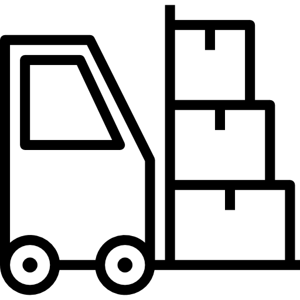

<section class="manufacture bg-third py-20">
  <div class="container">

    <app-title [text]="title"></app-title>

    <div class="font-montserrat mb-10">
      <p class="mb-5">
        <span class="font-bold">"Eco-Factory Siberian Cedar"</span> - is an expert in the production of products based
        on cedar nuts and wild-growing
        plants of Siberia. The eco-factory was founded in 1999. During this time, thousands of tons of nut products have
        come off the conveyors.
      </p>
      <p>
        Since 2014, the eco-factory has been focusing on the production of natural handmade candies based on pine nut
        kernel and Siberian berries. The company concentrates on natural ingredients, consciously refusing to use
        flavorings and preservatives.
      </p>
    </div>

    <div class="flex flex-wrap font-montserrat justify-center">
      <div class="w-1/4 lg:w-1/2 sm:w-full sm:mb-5 p-11 flex flex-col items-center text-center">
        <div class="mb-5">
          
        </div>
        <div class="mb-2.5 text-3xl font-semibold">21</div>
        <div class="font-bold text-xs mb-5 uppercase">years</div>
        <div class="font-montserrat">
          «Siberian Cedar» company in the food market
        </div>
      </div>
      <div class="w-1/4 lg:w-1/2 sm:w-full sm:mb-5 p-11 flex flex-col items-center text-center">
        <div class="mb-5">
          
        </div>
        <div class="mb-2.5 text-3xl font-semibold">4300</div>
        <div class="font-bold text-xs mb-5 uppercase">m²</div>
        <div class="font-montserrat">
          production facilities
        </div>
      </div>
      <div class="w-1/4 lg:w-1/2 sm:w-full sm:mb-5 p-11 flex flex-col items-center text-center">
        <div class="mb-5">
          
        </div>
        <div class="mb-2.5 text-3xl font-semibold">190</div>
        <div class="font-bold text-xs mb-5 uppercase">tons</div>
        <div class="font-montserrat">
          of pine nuts the company exported to Europe in 2020
        </div>
      </div>
      <div class="w-1/4 lg:w-1/2 sm:w-full sm:mb-5 p-11 flex flex-col items-center text-center">
        <div class="mb-5">
          
        </div>
        <div class="mb-2.5 text-3xl font-semibold uppercase">10 000</div>
        <div class="font-bold text-xs mb-5 uppercase">trees</div>
        <div class="font-montserrat">
          company employees planted in 2021. Reforestation is the company's corporate mission
        </div>
      </div>
    </div>

    <div class="flex flex-col gap-5">
      <app-slider-manufacture-one></app-slider-manufacture-one>
      <app-slider-manufacture-two></app-slider-manufacture-two>
    </div>


  </div>
</section>
